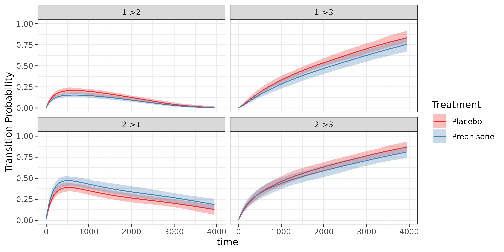
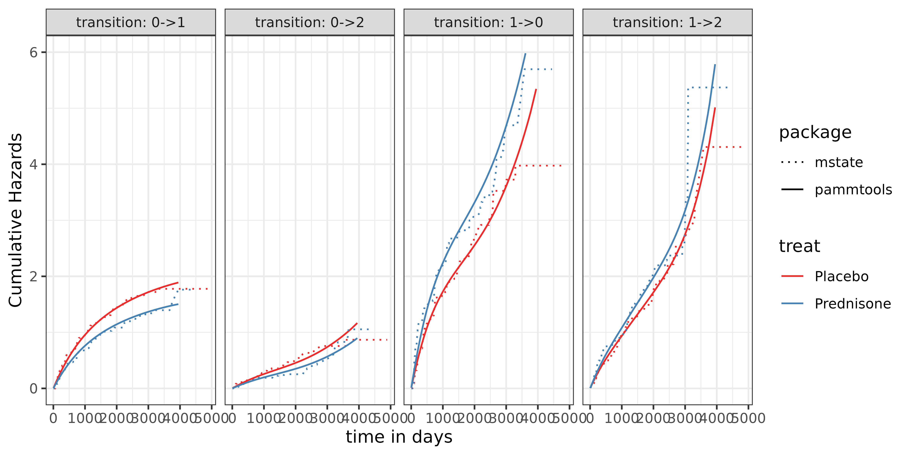
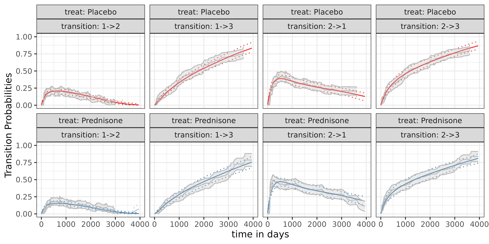

Multi-State Modelling
Johannes Piller, Andreas Bender
2025-03-24
Source:vignettes/multi-state.Rmd
multi-state.RmdIntroduction
In this vignette, we show examples of how to estimate and visualize transition probabilities for multi-state data. First, we show that a baseline PAMMs model returns equal probabilities as the empirical transition probabilities stemming from the Aalen-Johannsen estimator. Second, we show that the estimated baseline model in a multi-state setting with backtransitions using PAMMs is equal to a Cox proportional hazard model. Third, we illustrate the application of PAMMs in the analysis of the non-linear effect of hemoglobin on the probabilities to transition to a plasma cell malignancy (PCM) and / or death.
Data transformation
The data transformation required to fit PAMMs to multi-state data is
similar to the transformation in the single event case (see the data
transformation vignette for details). In fact, internally the
standard transformation is applied to each event type using
as_ped, however, some choices have to be made
- left-truncation becomes relevant, because, so far, settings considered only transitions from the initial status to a single event of interest
- specify the start and end of an event
- return the data as a list (one element for each transition) or a stacked data set (with an additional column (covariate), indicating the transition)
prothr Data - Time to abnormal prothrombin levels in
liver cirrhosis
For illustration, we use the prothr data set from the
mstate package. - 488 liver cirrhosis
patients - endpoints: status = 0/1 for censoring, event -
events of interest: status = 1 and to = 2/3
for abnormal prothrombin level (patient can transition between normal
and abnormal prothrombin level back and forth), death,
tstart, tend as time-to-event - variable of
interest treat: A patient’s treatment (Placebo,
Prednisone)
library(survival)
library(mgcv)
library(ggplot2)
library(pammtools)
library(purrr)
library(mstate)
library(checkmate)
library(dplyr)
data(prothr, package = "mstate")
prothr |> filter(id == 46) |> knitr::kable() # example patients| id | from | to | trans | Tstart | Tstop | status | treat |
|---|---|---|---|---|---|---|---|
| 46 | 1 | 2 | 1 | 0 | 415 | 1 | Prednisone |
| 46 | 1 | 3 | 2 | 0 | 415 | 0 | Prednisone |
| 46 | 2 | 1 | 3 | 415 | 417 | 0 | Prednisone |
| 46 | 2 | 3 | 4 | 415 | 417 | 1 | Prednisone |
In general, one has to follow three steps to derive transition
probabilities from multi-state survival data. - First, we need to
transform the survival data prothr into piecewise
exponential data. - Second, we need to estimate the log hazard structure
using PAM objects. - Third, we need to post-process the data to include
all relevant objects of interest in our data set.
Transformation to PED format
Transforming the survival data prothr into piecewise
exponential data, we can use
# not necessary, prothr already contains all possible transitions
# my.prothr <- prothr |> add_counterfactual_transitions() # add possible transitions
data("prothr", package = "mstate")
prothr <- prothr |>
mutate(transition = as.factor(paste0(from, "->", to))
, treat = as.factor(treat)) |>
rename(tstart = Tstart, tstop = Tstop) |>
filter(tstart != tstop) |>
select(-trans)
ped <- as_ped(
data = prothr,
formula = Surv(tstart, tstop, status)~ .,
transition = "transition",
id = "id",
timescale = "calendar",
tdc_specials="concurrent"
)where add_counterfactual_transitions is a helper
function, which adds all possible transitions at each point in time.
Baseline Multi-State Model
Estimating the log hazard structure using PAM objects, we can use
# pam <- pamm(ped_status ~ s(tend, by=transition) + transition * treat, data = ped)
pam <- bam(ped_status ~ s(tend, by=transition) + transition * treat
, data = ped
, family = poisson()
, offset = offset
, method = "fREML"
, discrete = TRUE)
summary(pam)##
## Family: poisson
## Link function: log
##
## Formula:
## ped_status ~ s(tend, by = transition) + transition * treat
##
## Parametric coefficients:
## Estimate Std. Error z value Pr(>|z|)
## (Intercept) -7.38794 0.08960 -82.453 < 2e-16 ***
## transition1->3 -0.86891 0.16360 -5.311 1.09e-07 ***
## transition2->1 0.80770 0.12793 6.314 2.72e-10 ***
## transition2->3 0.45954 0.13943 3.296 0.000981 ***
## treatPrednisone -0.22806 0.12097 -1.885 0.059398 .
## transition1->3:treatPrednisone -0.03544 0.23151 -0.153 0.878318
## transition2->1:treatPrednisone 0.48910 0.16552 2.955 0.003128 **
## transition2->3:treatPrednisone 0.37117 0.19188 1.934 0.053063 .
## ---
## Signif. codes: 0 '***' 0.001 '**' 0.01 '*' 0.05 '.' 0.1 ' ' 1
##
## Approximate significance of smooth terms:
## edf Ref.df Chi.sq p-value
## s(tend):transition1->2 1.695 2.123 63.476 <2e-16 ***
## s(tend):transition1->3 2.479 3.104 7.058 0.0736 .
## s(tend):transition2->1 3.146 3.909 56.362 <2e-16 ***
## s(tend):transition2->3 2.783 3.468 8.229 0.0594 .
## ---
## Signif. codes: 0 '***' 0.001 '**' 0.01 '*' 0.05 '.' 0.1 ' ' 1
##
## R-sq.(adj) = -0.004 Deviance explained = -2.48%
## fREML = 3.4836e+05 Scale est. = 1 n = 373164Post-processing, i.e. plotting the transition probabilities
Post-processing the data to include all relevant objects of interest in our data set, we can use
ndf <- make_newdata(ped, tend = unique(tend), treat = unique(treat), transition = unique(transition))
ndf <- ndf |>
group_by(treat, transition) |> # important!
arrange(treat, transition, tend) |>
add_trans_prob(pam, ci=TRUE)
ndf <- ndf |>
group_by(treat, transition) |> # important!
add_cumu_hazard(pam, overwrite = T)where make_newdata creates a data set containing all
covariates and all their combinations from the PAM object. The
convenience function add_trans_prob crates a new column
trans_prob, which can be visualized.
# visualization
ggplot(ndf, aes(x=tend)) +
geom_line(aes(y=trans_prob, col=treat)) +
geom_ribbon(aes(ymin = trans_lower, ymax = trans_upper, fill=treat), alpha = .3) +
scale_color_manual(values = c("firebrick2"
, "steelblue")
)+
scale_fill_manual(values = c("firebrick2"
, "steelblue")
)+
facet_wrap(~transition) +
xlim(c(0, 4000)) +
ylim(c(0,1))+
labs(y = "Transition Probability", x = "time", color = "Treatment", fill= "Treatment")
Comparison of the results with Aalen-Johannsen estimator
Comparing the pammtools results with the
mstate results, we want to validate that the baselines are
indeed correct. The following code shows the comparison between the
mstate.
First, we compare the cumulative hazards
# # plot transitions
# ggplot(test_msm, aes(x=tend, y=trans_prob)) +
# geom_line(aes(col=as.factor(treat))) +
# facet_wrap(~transition, ncol = 2, labeller = label_both) +
# # scale_color_manual(values = c("#1f78b4", "#1f78b4", "#33a02c", "#33a02c"))+
# # scale_linetype_manual(values = c("solid", "dashed", "solid", "dashed")) +
# ylim(c(0,0.8)) +
# xlim(c(0, 4000)) +
# ylab("Transition Probability") +
# xlab("time") +
# theme_bw()
comparison_nelaal <- ggplot(long_haz_df, aes(x=tend, y=cumu_hazard, col=treat, linetype = package)) +
geom_line() +
facet_wrap(~transition, ncol = 4, labeller = label_both) +
scale_color_manual(values = c("firebrick2"
, "steelblue")
)+
# scale_linetype_manual(values = c("solid", "dashed", "solid", "dashed")) +18:
ylab("Cumulative Hazards") +
xlab("time in days") +
ylim(c(0,6)) +
scale_linetype_manual(values=c("dotted", "solid")) +
theme_bw()
comparison_nelaal Second, we compare the transition probabilities, which are calculated using the cumulative hazards
Third, we compare the width of the confidence bands
## Warning: Removed 2 rows containing missing values or values outside the scale range
## (`geom_line()`).
## Removed 2 rows containing missing values or values outside the scale range
## (`geom_line()`).
## Removed 2 rows containing missing values or values outside the scale range
## (`geom_line()`).